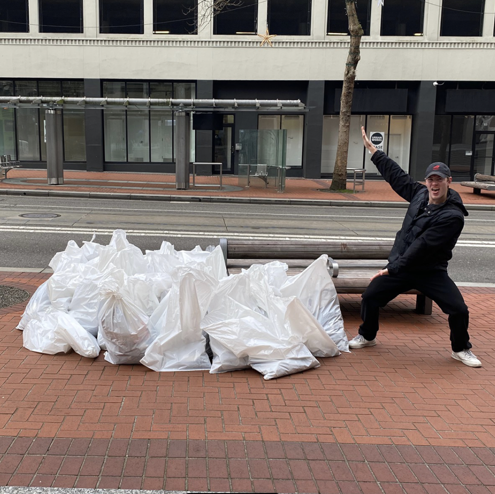
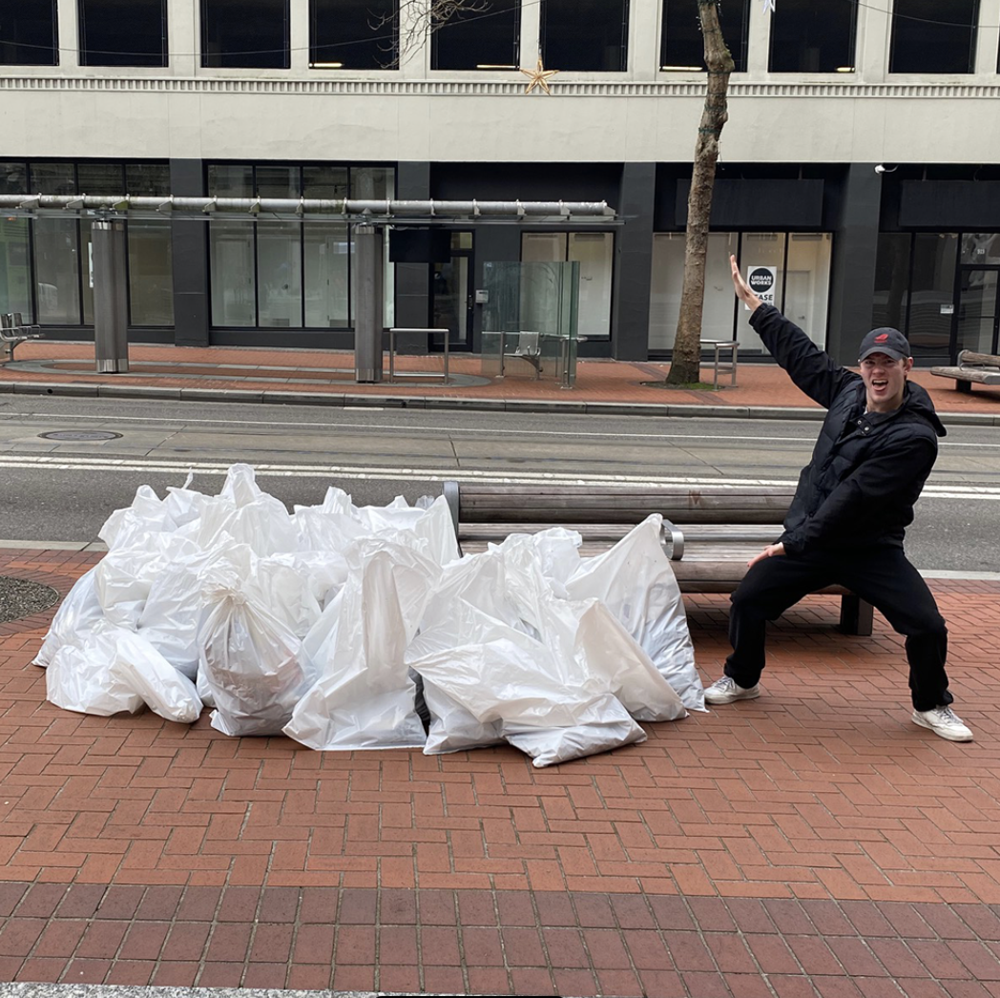
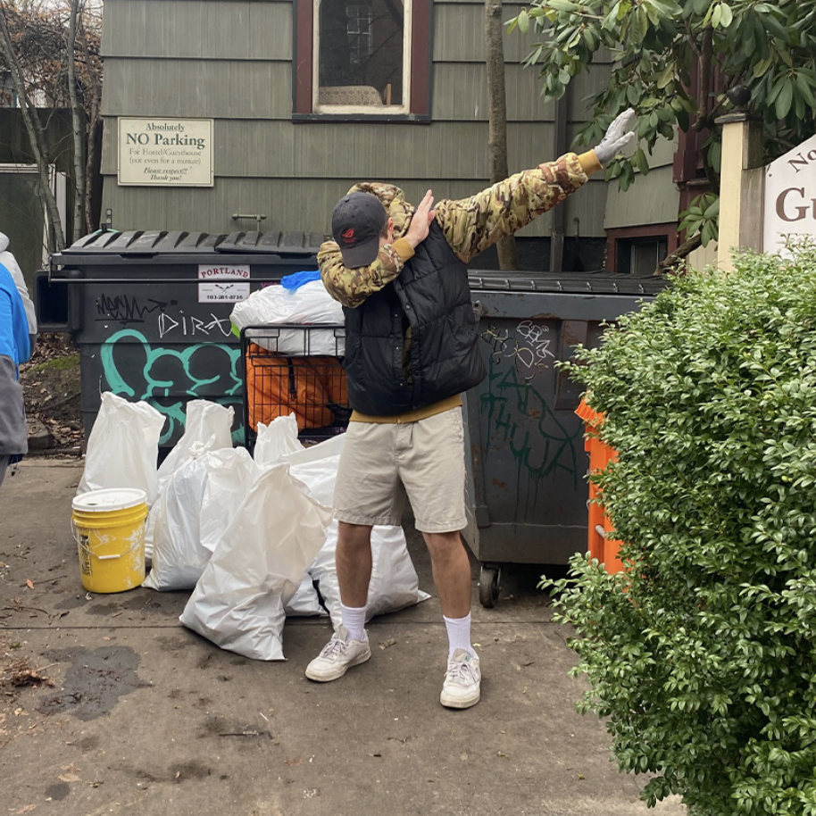
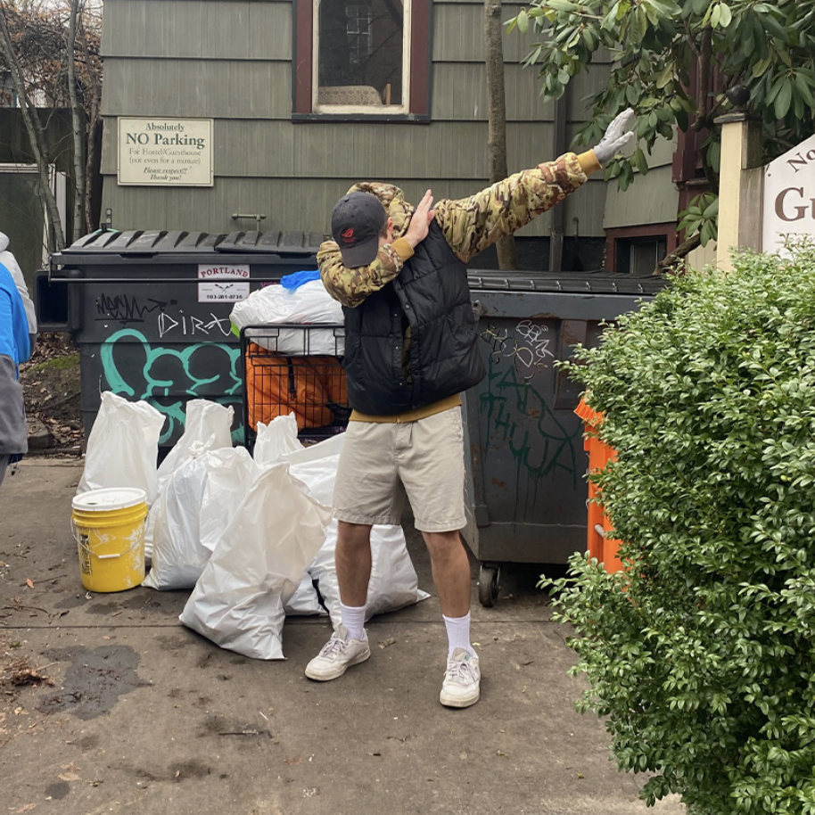

關於我
嗨，我叫 Curtis。我目前正處於人生的十字路口，暫時放慢腳步（躺平）。
2026 年我的一個主要目標是找到一個能夠自給自足的利他型專案。
我喜歡擁有廣泛的工作經驗。我做過各種體力勞動和服務業，在台灣科技業工作過，最近則是在一些 web3 和 AI 新創公司。
我來自俄勒岡州，但在台灣住了很長一段時間。
我有一隻大隻的白色蓬鬆貓。
我的中文還不錯。
我喜歡做飯和唱卡拉OK。
簡歷
The Invention Network - 丹佛，科羅拉多州
社群主管 | 2025年 - 2026年
建立新的社群平台和社交計劃。
與頂尖 web3 機構合作，規劃產品和領導團隊之間的增長飛輪。
使用 n8n 為各種工作流程創建和調整 AI 自動化。
在所有渠道製作引人入勝且易讀的 GTM 計劃內容。
Eigen Labs - 遠端
支援與社群經理 | 2024年 - 2025年
負責設計和迭代代幣化計劃、社交行銷活動和競賽，直接推動 EigenLayer 的用戶參與和產品採用。
領導實驗室和基金會實體的整體社群策略和訊息傳遞，同時重組社群 Discord 以主導教育和互動活動。
創建、擁有並改進為質押者、節點營運商、CEX、DEX 和 web3 基礎設施客戶提供的高度技術性支援系統，將回應指標和 CSAT 提升了數個量級。
利用 Chainalysis 偵測和緩解欺詐性和高風險的區塊鏈活動，確保監管合規。
管理 1 名內部支援工程師以及 10 家行銷代理商供應商和版主。
Rio Network - 遠端
社群經理 | 2023年 - 2024年
領導為流動性再質押代幣創建端到端社群策略和支援基礎設施，服務投資者、節點營運商和 dApp 用戶。
在關鍵啟動階段建立基礎社群空間和計劃，以促進倡導和支援採用。
台北區塊鏈週 - 台灣台北
社交媒體經理 | 2023年 - 2024年
志願領導台灣本地區塊鏈活動的社交媒體工作。
BLKSODA - 台灣台北
內容創作者 | 2023年 - 2024年
為台灣各 PC 零組件公司創作直式影片和攝影內容。
Bitski - 舊金山，加州
社群與支援經理 | 2021年 - 2023年
設計並執行社交內容、品牌和網紅活動，使公司的 Twitter 新增超過 15,000 名粉絲，讓用戶成為品牌擁護者。
使用 Asana、Typeform 和 Discord 實施從測試版測試者到 Bitski 開發人員的白手套 UI/UX 回饋循環，確保社群見解直接影響產品迭代。
撰寫了一百多篇涵蓋法幣、加密貨幣和 NFT 產品的支援文章。
管理 Zendesk 工單並向產品團隊提供定期分析報告，定義關鍵成功指標。
Myria - 遠端
社交行銷經理 | 2022年 - 2022年
為 web3 遊戲標題和 zk-STARK L2 創建社交和行銷活動，在一個月內將參與度翻倍，同時透過 Twitter、Discord、Telegram 和 Instagram 發布產品公告。
使用 Confluence、公開社交指標和鏈上數據準備區塊鏈遊戲市場和競爭對手的定性競爭分析報告。
華碩（玩家共和國） - 台灣台北
全球社交媒體經理 | 2018年 - 2021年
管理五個社交平台，總共擁有 1200 萬粉絲。
將 ROG Instagram 頁面從 20 萬粉絲增長到 260 萬粉絲，同時產生數百萬次連結點擊、頁面瀏覽等。
為發燒友 PC 硬體創建品牌範圍的產品和社交策略，同時與本地團隊密切合作執行。
與產品行銷團隊合作指導品牌和內容創作，以增加可交付成果的產出，同時節省設計師時間。
在 COMPUTEX、Gamescom 和其他貿易展或直播等大型活動期間負責超過 20 萬美元的社交廣告付費媒體。
華碩（玩家共和國） - 台灣台北
全球社交媒體專員 | 2017年 - 2018年
使用 Photoshop、Premiere 和攝影為遊戲受眾創建社交內容。
使用 Excel、Social Bakers、Sprinklr 和其他工具管理內容規劃和分析。
為 AI 網狀無線路由器產品撰寫技術媒體評論指南。
ADAM elements - 台灣台北
數位行銷專員 | 2016年 - 2017年
管理第三方 iOS 配件的推廣計劃，包括新聞稿、社交媒體、渠道合作夥伴和本地零售團隊。
使用 Mailchimp 執行電子郵件行銷活動，並以高投資報酬率執行 Facebook 廣告。
創建串流和視覺內容，協助貿易展。
Health Goth - 波特蘭，俄勒岡州
內容策展人 | 2014年 - 2017年
與朋友一起將美學時尚部落格從 0 增長到 36,000 名粉絲，影響了世界各地的現代時尚。
志願服務
 

 

SOLV Oregon - 波特蘭，俄勒岡州
2023年 - 2025年
每次回家都會參加波特蘭市中心的垃圾清理活動。
Portland Homeless Family Solutions - 波特蘭，俄勒岡州
2011年 - 2013年
每隔幾週志願在波特蘭市中心的一個小型收容所過夜，為流離失所的家庭提供幫助。